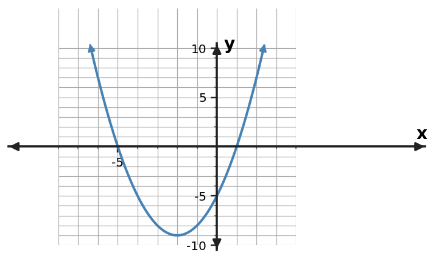

1. For $y=(x-3)^2-6$, state the vertex.
2. For $y=(x+4)^2+2$, state the vertex.
3. For $y=(x+3)(x-5)$, state the zeros.
4. For $y=2(x-2)(x+6)$, state the zeros.
5. For $y=x^2+4x-7$, state the $y$-intercept.
6. For $y=-2x^2+2x+8$, state the $y$-intercept.
7. Rewrite $y=(x+3)(x-5)$ in standard form.
8. Rewrite $y=(x+4)(x-4)$ in standard form.
9. Rewrite $y=(x-1)(x-6)$ in standard form.
10. Rewrite $y=x^{2} + x - 12$ in factored form.
11. Rewrite $y=x^{2} - 8x + 7$ in factored form.
12. Rewrite $y=x^{2} + 7x + 6$ in factored form.
13. A graphing problem asks where a quadratic crosses the $x$-axis. Which form—standard, vertex, or factored—usually lets you read those values with the least algebra?
14. A design problem asks for the highest point of a parabolic arch. Which form—standard, vertex, or factored—usually makes that point most direct?
15. A model asks for the initial value $f(0)$. Which form—standard, vertex, or factored—usually displays that value directly?
16. A student says standard form is always the most useful form. Give one task for which vertex form is more efficient.
17. Use the graph to read the zeros. Then choose which form—standard, vertex, or factored—would preserve those zeros most visibly.

18. Use the table’s symmetry to identify the vertex, then write a vertex-form model with $a=1$.
| $x$ | $y$ |
|---|---|
| $0$ | $-1$ |
| $1$ | $-4$ |
| $2$ | $-5$ |
| $3$ | $-4$ |
| $4$ | $-1$ |
19. Show that $y=(x+3)(x-5)$ and $y=x^{2} - 2x - 15$ are equivalent by expanding the factored form.
20. For the equivalent forms $y=(x+4)(x-6)$ and its standard form, which form reveals the $x$-intercepts without further algebra?
21. For $y=(x-3)^2-8$, which visible feature would take more work to obtain: the vertex or the zeros?
22. A ball's height model is being used to find the maximum height and when it occurs. Which quadratic form is the most useful first choice, and why?
23. A revenue model asks for the input values where revenue is zero. Would factored form or standard form usually be the more useful first choice? Explain.
24. Rewrite $y=(x+4)^2-16$ in factored form by recognizing a difference of squares.